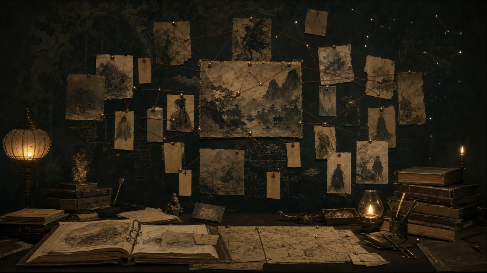

席方平 (Xi Fangping) / 陆判 (Lu Pan)
One follows blocked appeals; the other shows a judge altering fate.
Theme, character, institution, and image links that help readers choose the next tale.

One follows blocked appeals; the other shows a judge altering fate.
Injustice, exams, and offices show the afterlife copying human systems.
Both begin with nocturnal encounter; one is disguise, the other captivity and escape.
One satirizes the shortcut-seeker; the other makes a marketplace briefly impossible.
Both figures are more than threats; each chooses within a binding rule.
Both ask how nonhuman women enter, resist, or reshape household rules.
Yingning's laughter and Jiangcheng's force both expose boundaries inside household order.
Flower spirit and longing tree both preserve feeling as visible form.
One tracks pressure downward; the other pushes grievance upward.
Sword and tree both preserve wronged names inside legend.
One watches a phantom city appear; the other enters a reversed world.
One changes body and talent; the other changes the system of judgment.
One resists through wit; the other builds trust through repeated meeting.